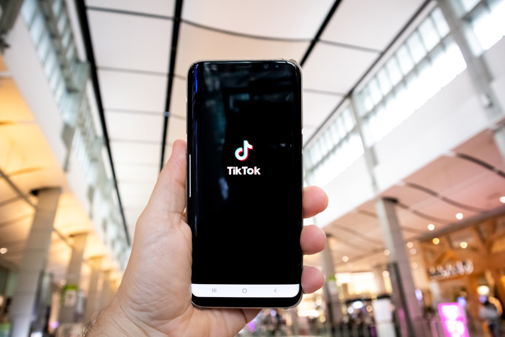

Así arrastra TikTok las marcas que quieren vender a los jóvenes
POR ROSER REYNER / 05-09-2023
¿Qué atrae de TikTok?
Lo que se hace en publicidad siempre ha sido un reflejo de la sociedad, empieza diciendo Mireia Montaña. Y la comunicación de los jóvenes es cada vez más dinámica ya que ellos tienen menos capacidad de atención. En las redes sociales hacen scroll muy rápido y eso es lo que están acostumbrados a consumir con sus iguales, continua
En este sentido, la experta de la UOC recuerda que ya hace años que YouTube introdujo los anuncios de seis segundos y que actualmente los vídeos cortos de TikTok están a la orden del día. Si las marcas quieren rejuvenecer, ¿qué hacen? Se adaptan a estos formatos para intentar gustar más a los jóvenes. Muchas marcas luchan por llevarse el llamado pocket money , es decir, el dinero de la semanada, subraya
TikTok aprovecha para llegar a unas franjas de edad que no consumen los medios tradicionales, que se informan básicamente por las redes sociales, añade la profesora Candela Ollé.
De hecho, según el informe Global Social Media Trends Report 2023, elaborado por Hubspot y Brandwhatch, el año pasado TikTok superó a Google como fuente principal de información para la llamada generación Z o los centennials . El estudio indica que el 36% de los consumidores de la generación Z y el 24% de los consumidores de entre 18 y 54 años buscan primero las marcas en las redes.
Aunque, según el mismo informe, Instagram es la red social preferida de los expertos en marketing en sus apuestas de cara a 2023, le sigue TikTok por el potencial que consideran que tiene para hacer crecer la audiencia. En TikTok puedes hacer publicidad en formatos bastante económicos y que llegan a mucha gente, ratifica Montaña.
Tanto las diferentes posibilidades de presupuesto como de formato son aspectos positivos de TikTok a la hora de atraer las marcas para hacer publicidad, coincide Sílvia Martínez. Se pueden hacer campañas para crear retos y que los usuarios hagan contenido vinculado a un hashtag de una marca concreta, y esto es muy interesante para las empresas, ilustra en este sentido. Asimismo, resalta la manera en la que los usuarios se relacionan con la plataforma: Está pensada para el entretenimiento y cuando abres TikTok ya estás sintiendo que pasarás un rato agradable, lo que predispone la forma en la que recibirás el mensaje.
De hecho, en la campaña electoral de las elecciones municipales y autonómicas, muchos partidos políticos del Estado español han aprovechado las posibilidades que ofrece TikTok a pesar de tener vetada la publicidad. Un ejemplo es la canción creada por el PP madrileño con el título Ganas de Madrid , que ha llevado a muchos usuarios a hacer vídeos. También se han hecho parodias en la propia red.
¿Qué puede echar atrás a las marcas?
Pues depende de la marca. Le puede ir muy bien hacer anuncios en TikTok o puede quedar muy extraño, casi ridículo, asegura Montaña.
La profesora de la UOC,que es experta en publicidad, subraya que os jóvenes son el público más infiel que hay. Puede ser que puntualmente vayan mucho a un determinado producto y que después cambien de golpe. Por eso se recomienda invertir con mesura en publicidad hacia esa franja de edad en las redes: Tienen poco vínculo emocional con las marcas, asegura. Las campañas de publicidad de las marcas no pueden basarse solo en plataformas que de repente son muy conocidas, también deben hacer otras acciones para los jóvenes en otros espacios, como el branded content , contenidos creados desde la marca, detalla.
En este sentido, Martínez, experta en el consumo y el uso de los usuarios de las redes sociales, recomienda a los publicistas estar muy pendientes en cada momento de por dónde se mueven los jóvenes y cómo cambian sus gustos y preferencias, y no tener miedo a experimentar e innovar.
Por su parte, Ollé lanza dos advertencias. La primera:
Todo lo que pasa por TikTok no está ni verificado ni validado. Hay que tener cuidado con la validez que das a aquello que consumes en el ámbito periodístico y publicitario.
Y la segunda:
A diferencia de la mayoría de aplicaciones que consumimos masivamente, en este caso el país que hay detrás de la empresa que controla la red y que tiene los datos es China. Esto ya ha condicionado que varios países y las instituciones europeas prohíban su uso y puede condicionar que la moda de TikTok sea más efímera.
Reyner, R. (5 de septiembre de 2023). Así arrastra TikTok las marcas que quieren vender a los jóvenes. Todo Comunica
Fotografía de Olivier Bergeron en Unsplash